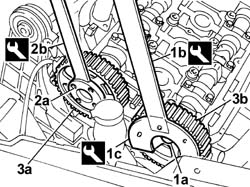
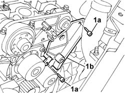
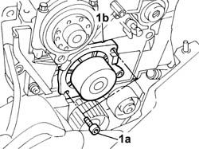
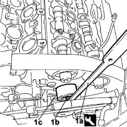
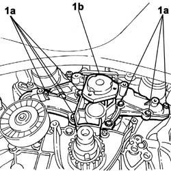

1088C14 WATER PUMP - R.R. REFITTING WITH TIMING BELT REMOVED
- Path
- Procedures > 10 ENGINE > 1088 ENGINE COOLING > 1088C WATER PUMP AND THERMOSTAT > 1088C14 WATER PUMP - R.R. REFITTING WITH TIMING BELT REMOVED
- Kind
- repair procedure (removal / refitting; the operation number is the code)
- Applies to
- engines: 2.0 TB, 2.4 20V, 3.0 V6, 3.2 V6; all production periods
- Interactive page
- https://sloeber94.github.io/elrnDB-lThss/en/#/95441
Applies to: engines: 2.0 TB, 2.4 20V; all production periods
 Removing
Removing
 Refitting
Refitting1. Undo the bolt (1a) for the exhaust side timing driven pulley using the tools (1b) and (1c) for counter-torque.
 | Description | Code | Function |
|---|---|---|---|
1b | Support for counter-torque | 1.860.831.000 | Loosen/tighten exhaust side camshaft drive pulley bolt |
| Description | Code | Function |
|---|---|---|---|
1c | Spanner for rotating timing pullies | 1.860.831.002 | Loosen/tighten camshaft drive pulley bolt |
2. Undo the bolts (2a) for the inlet side timing driven puley using the tool (2b) for counter-torque.
| Description | Code | Function |
|---|---|---|---|
2b | Counter-torque | 1.860.856.000 | Loosen/tighten inlet side camshaft drive pulley bolts |
3. Remove the inlet side timing driven pulley (3a) and the exhaust side timing driven pulley (3b).

Applies to: engines: 2.0 TB, 2.4 20V; all production periods
1. Undo the fixing bolts (1a) and remove the guard (1b).

Applies to: engines: 2.0 TB, 2.4 20V; all production periods
1. Undo the bolts (1a) and remove the water pump (1b) complete with O-ring.

Applies to: engines: 2.0 TB, 2.4 20V; all production periods
Refitting
Removing- Position the water pump, complete with O-ring, in its housing and secure it tightening the bolts to the recommended torque.
 | Value - daNm | Fastening | Component | Ø |
|---|---|---|---|---|
. | 2.5 | Bolt | COOLANT PUMP | M8 |
- Fit the guard and secure it using the bolts.
- Position the timing driven pullies (inlet side and exhaust side) in their housings.
- Screw in the bolts fixing the timing driven pullies without tightening them.
Applies to: engines: 3.0 V6, 3.2 V6; all production periods
Removing
Refitting1. Tighten the fixing bolt (1b) using the tool (1a) and remove the upper timing drive belt fixed tensioner (1c).
| Description | Code | Function |
|---|---|---|---|
1a | Spanner for fixed tensioner | 1.870.749.000 | Loosen/tighten timing lower fixed tensioner fixing bolt |

Applies to: engines: 3.0 V6, 3.2 V6; all production periods
- Raise the vehicle.
See in Op. 1092G14 Engine components single belt MOVING TENSIONER - R.R.
- Undo the twelve bolts (1a) fixing the water pump (1b) and remove it complete with the gasket underneath.

Applies to: engines: 3.0 V6, 3.2 V6; all production periods
Refitting
Removing- Position the gasket and the water pump, then tighten the fixing bolts.
| Value - daNm | Fastening | Component | Ø |
|---|---|---|---|---|
. | 0.9 | Bolt | COOLANT PUMP | M6 |
See in Op. 1092G14 Engine components single belt MOVING TENSIONER - R.R.
- Lower the vehicle.
- Position the upper timing drive belt fixed tensioner and tighten the fixing bolt (1b) using the tool (1a).
| Value - daNm | Fastening | Component | Ø |
|---|---|---|---|---|
. | 2.5 | Bolt | FIXED TENSIONER | M8 |
- [0010T21]